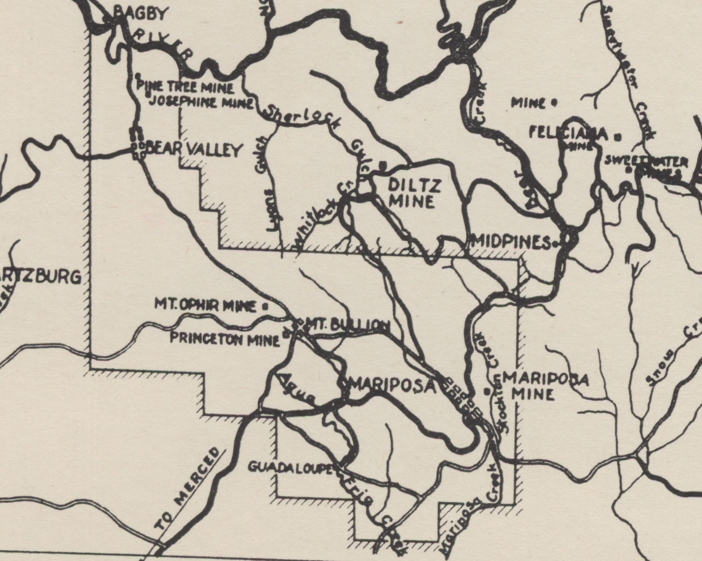
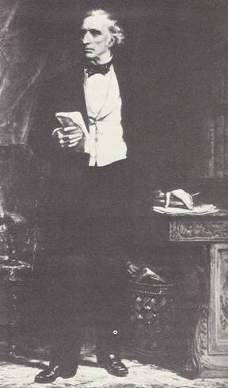

shareholders
On October 17, 1863, Mariposa Company Stock began being traded on the New York Stock Exchange. This is the transcontinental group of men, all wealthy and connected, who had financial stakes in Mariposa Estate during Olmsted's management.
Frederick Law Olmsted (1822-1903)
In the summer of 1863, Frederick Law Olmsted resigned from his post as head of the Sanitary Commission, “overseeing the health of volunteer soldiers in the Union Army.”1 At this point in his career, Olmsted was well-known for both his journalism and for working with the architect Calvert Vaux in the creation of Central Park between 1858 and 1861. After his service in the Sanitary Commission, Olmsted hoped to start a newspaper with Edwin Godkin, but found it trying to convince potential backers to support the project. According to his biographer, Laura Roper, Olmsted’s career was at an impasse: “the door to Central Park had been slammed on him, the magazine was hanging fire, and he was twelve thousand dollars in debt and sliding a little further all the time.”2 It was in this context that Charles Dana, the Assistant Secretary of War, referred Olmsted to the former New York City mayor, George Opdyke, who was seeking a new manager for a California gold mining estate he was invested in.3 Olmsted accepted the job to work as “Superintendent or Manager” of the Mariposa Estate on August 20, 1863.
Olmsted left New York on a steamship on September 14, arriving at the Mariposa Estate on October 14 after crossing the Panama Canal and briefly staying in San Francisco. The estate comprised about seventy square miles south of the Merced River in the foothills of the Sierra Nevada Mountains, and was controlled by a group of New York investors with whom Olmsted had become friendly from his work on Central Park. The businessmen verbally agreed to pay Olmsted a salary of $10,000/year in gold, nominally twice the dollar amount he was paid as Superintendent of Central Park, but the real value was likely even higher because gold was worth about twenty times the value of paper currency in the fall of 1863. Olmsted’s compensation package also included five hundred shares of Mariposa Company stock, with a par value of $50,000.4 Olmsted accepted the position at Mariposa in hopes that after several years, he would have established investments so profitable that he only had to undertake work consonant with his ethical convictions.5
Soon after arriving at Mariposa Estate, Olmsted learned of the Company’s dire financial situation resulting from poor mine performance, previous mismanagement, and the fallout from a highly litigated land grant from before the Mexican American War. To cut expenses, Olmsted cuts workers’ wages by 2%, reducing miners’ day rates to a maximum of $3.15 and the pay of other underground laborers to $2.40 per day. After workers protested by stopping work, Olmsted hired Chinese people willing to work for the even lower rate of $1.75 a day, which ultimately compelled some of the white workforce on strike to return to the mines out of racial animosity.6While Olmsted was initially appalled by the violence between blacks, Native Americans, and East Asians he witnessed at Mariposa, he eventually relied upon these racial divisions to eke some profit from the failing mines and to begin repaying some of the Company’s creditors.7 On this incident, Olmsted wrote James Hoy, one of the investors in New York, “I don’t want the men to think they can ever expect to gain anything from me by striking – and the sooner they learn this the better in every respect shall we be situated.”8
Originally hired because the Mariposa Company trustees believed Olmsted’s work on Central Park made him an ideal mine manager, Olmsted was relatively unsuccessful at improving the Estate’s output of mineral ore.
Instead, his successes were largely financial. As Mariposa Company dissolved throughout 1864, Olmsted made a series of novel deals to lease the mines to Mariposa’s lenders in payment for outstanding debts. But, most significantly, while staying in San Francisco for four months negotiating between the Company’s investors in New York and their local lender, the Bank of California, Olmsted ingratiated himself with San Francisco businessmen in the throes of betting on infrastructure, oil, and other minerals. Through these connections, Olmsted gained access to securities markets in which he applied his knowledge and expertise towards making wise investments for himself and his acquaintances back on the East Coast. By the time he left California for New York in October 1865, Olmsted had personally invested $2,500 (about $50,000 today) in the stocks of California telegraph, shipping, and gas companies that would continue to grow in value throughout his lifetime.10 ☐
Frederick Billings (1823-1890)
Billings was a San Francisco based lawyer who represented John C. Frémont before the U.S. Supreme Court in an 1856 trial that upheld the validity of Frémont’s title to Mariposa Estate. Later, Frémont borrowed against the land from a group of creditors including Billings and Brumagin; when Frémont became delinquent on his debts, these lenders repossessed Mariposa Estate, later selling it to the New York investors who hired Olmsted.11
Billings retained some interest in the Estate and when Olmsted landed at San Francisco, Billings accompanied him on a steamship to Stockton and then by horse coach to Mariposa.12 Just weeks into his new job, Olmsted received a letter from Billings alerting that the mines’ prospects had dramatically dwindled from months earlier when Olmsted was first hired: production had dropped from $100,000/month to $25,000/month.13 ☐
Mark Brumagin and Cornelius K. Garrison (1809-1885)

Map showing the "floating" land grant purchased by John C. Frémont from Mexican overnor Juan B. Alvaredo in 1847. Under Mexican law, Frémont was able to set the bounds of his claim. After the Mexican-American War ended in 1848, land grants issued by Mexico had to be certified by Congress in a process that often favored white settlers over Mexican or Indigenous people.

On October 28, 1863, the newly installed manager at Mariposa, Olmsted, received a letter informing him that Garrison and Brumagin had a lien against the Estate stemming from, “an old debt of $7,847 which John C. Frémont had failed to pay to a Los Angeles cattle rancher named Francisco Ocampo in the 1850s.” At a sheriff’s sale in November 1858, the Estate’s title had passed to Ocampo in order to settle Frémont’s debts. Brumagin, one of Frémont’s creditors, bought the titled from Ocampo, later selling 1/8th of it. Frémont then struck a deal with Brumagin to repurchase the Estate title after paying back his debts with 2% monthly interest, but Frémont failed to repay Brumagin, resulting in “both the debt and the right to redeem the title,” passing to Mariposa Company. By the time Olmsted was notified about the issues with the title, with inflation, the Company now owed $308,000 in gold to Brumagin, who refused payment in paper money as was common amongst California businessmen. However, Mariposa Company was short on gold, having issued $1.5 million in bonds to pay its creditors. Under a special arrangement, Brumagin agreed to split the proceeds with Garrison, a financier involved in the shipping trade between San Francisco and New York, if he oversaw collecting the $308,000 debt from Mariposa Company. On June 24, 1864, Mariposa Company settled with Garrison, agreeing to pay him $300,000 in gold over four years.14 The burden of the settlement placed severe restrictions on Olmsted’s ability to manage the Estate and eventually led to the Company’s bankruptcy. ☐
David Dudley Field (1805-1894)
Field belonged to the group of New Yorker investors in the Mariposa Company. As a lawyer, Field represented both Morris Ketchum and John Frémont. He provided his services to Ketchum, Opdyke, and Hoy to incorporate as the Mariposa Company on June 25, 1863, for which he received 2,000 shares of Company stock.
Olmsted knew him well: Field contributed money to Olmsted’s 1856 “campaign to arm the free-soil settlers in Kansas,” and one year later Field signed the petition to name Olmsted Superintendent of Central Park. Field’s involvement in Mariposa helped convince Olmsted to take the job.15 ☐
Morris Ketchum (1796-1880)
Ketchum was the primary investor in the Mariposa Company and its treasurer. After purchasing John Frémont’s six-eighths interest in the Estate for $1.5 million in January 1863, Ketchum then sold his interest in the Estate to the Company when it incorporated later that year. The Company then issued $1.5 million in mortgage bonds to repay him.
A prominent banker with Ketchum, Son & Company, Ketchum “sold much of the first issue of government bonds for Secretary of the Treasury Salmon P. Chase in 1861.”16
In 1865, while still in San Francisco after retiring from Mariposa, Olmsted became Ketchum’s private consultant regarding California investments. In this capacity, Olmsted shared information about Ralston’s ventures with Ketchum and investigated possible investment in a manganese mine on an island off San Francisco. ☐
George Opdyke (1805-1880)
Opdyke was mayor of New York City between 1862 and 1863. He was part of the New York investment group incorporated as Mariposa Company. Olmsted was offered the job at Mariposa through Opdyke. ☐
WILLIAM CHAPMAN RALSTON (1826-1875)
Ralston was founder of the Bank of California who Olmsted worked with closely while in San Francisco negotiating Mariposa Company’s bankruptcy. In his final months in California, Olmsted advised Ralston on a number of investment schemes based on land and natural resources. Olmsted accompanied Ralston on a visit to the Buena Vista Vinicultural Society near Sonoma and, at Ralston’s request, wrote a report on wine production in the state entitled “The Production of Wine in California: Particularly Referring to the Establishment of the Buena Vista Vinicultural Society.”17 Olmsted also assisted Ralston’s petroleum speculation, investigating oil properties on the rocky shore near Santa Cruz and at Sargent’s Ranch, 25 miles east.18 ☐
Final project by Maxwell Smith-Holmes for Architecture's Subjects: Labor's Histories [ARC550]
Last updated May 12, 2023